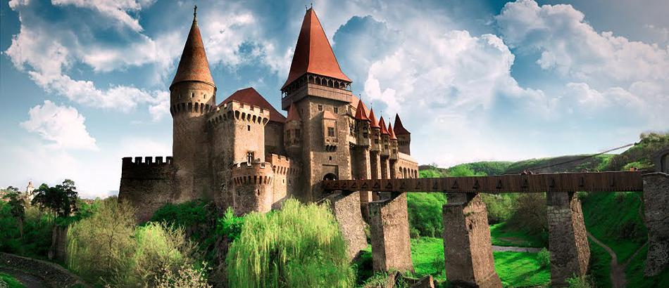
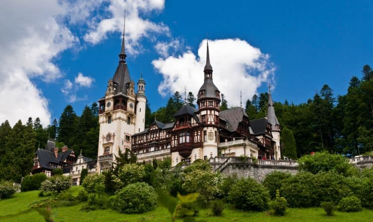
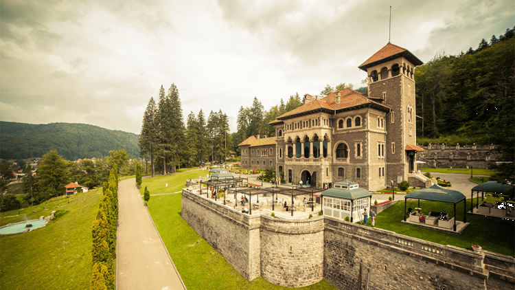
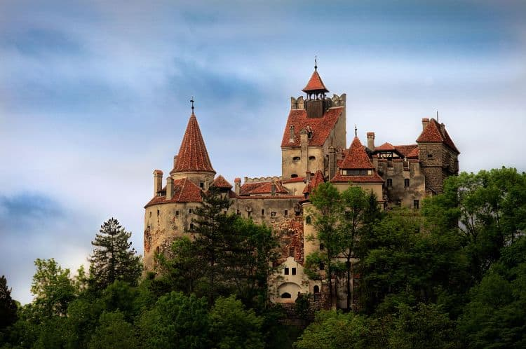
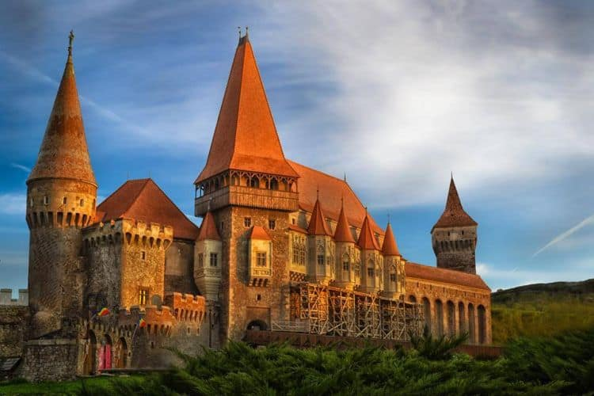
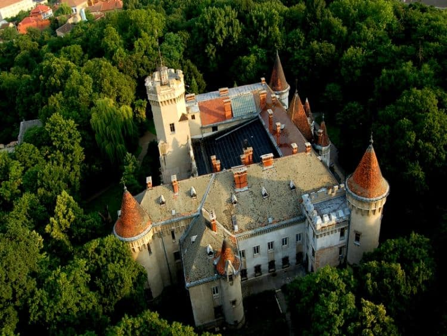

 Colectia de castele si cetati din Romania poate ilustra cel mai bine patrimoniul medieval bogat al tarii. În timp ce castele construite între secolele al XIV-lea și al XVIII-lea sunt fortărețe puternice și austerizate, construite în principal pentru apărarea împotriva invadatorilor, cele ridicate începând cu sfârșitul anilor 1800, sunt impunătoare și luxoase.
Castelul Peles, Sinaia
 Locatia: Sinaia, Țara Românească - România de SudCele mai apropiate orașe mari: Brașov și București
Din punct de vedere arhitectonic, castelul Peles e construit in stil neorenascentist german. Este considerat unul dintre cele mai frumoase castele din Europa, fiind dotat inca de la inceput cu cateva elemente moderne: lift interior, incalzire centrala si, in special, uzina electrica proprie, amplasata pe malul paraului din apropiere. Pelesul are 170 de incaperi, dintre aceste doar 10 fiind accesibile turistilor (printre ele , Sala Maura, Salonul Florentin, Sala Coloanelor, Sala Armelor). In castel se afla mai multe colectii valoroase de sculpturi, armuri, picturi, tapiserii, mobilier, obiecte de ceramica, argint si portelan.
Castelul Cantacuzino, Busteni
 Castelul Cantacuzino din Busteni a fost proiectat si ridicat, in stil neoromanesc, de arhitectul Grigore Cerchez in anul 1911, din ordinul printului Gheorghe Grigore Cantacuzino (Nababul), fost ministru al Romaniei, in doua randuri, la sfarsitul secolului 19 si inceputul secolului 20. Pana la nationalizarea din 1948, castelul a apartinut familiei Cantacuzino, dupa care a devenit sanatoriu. Din anul 2010 a reintrat in circuitul turistic.Castelul Bran, loc. Bran (jud Brasov)
 Locatia: Bran, Transilvania - România CentralăCele mai apropiate orașe mari: Brasov, Predeal, Sinaia
In anul 1211, cavalerii teutoni dintr-un ordin catolic infiintat de cruciatii germani in Palestina la finele secolului 12, primesc in dar de la regele Andrei al II-lea al Ungariei districtul Tara Barsei, pentru apararea granitei sud-estice a Transilvaniei de atacurile invadatorilor pecenegi. Teutonii ridica o fortareata la Bran dar in anul 1226 sunt izgoniti de aici. Aceasta este prima mentionare a castelului de la Bran, ce se va ridica in urma documentului emis de regele Ludovic I al Ungariei (in 1377) care da sasilor din Scaunul Brasovului dreptul de a construi o noua cetate de piatra, pe banii si cheltuiala lor. De-a lungul urmatorilor ani, castelul a fost folosit ca baza strategica de catre Sigismund de Luxemburg, care i l-a daruit vasalului sau, Mircea cel Batran, in 1407. 20 de ani mai tarziu, castelul a intrat in proprietatea coroanei Ungariei, care avea sa-l fortifice, sa-l extinda si, in 1498, sa-l inchirieze catre scaunul Brasovului. Tot in secolul 15 (1459), Iancu de Hunedoara l-a insarcinat pe Vlad Tepes sa apere trecatoarea catre Transilvania prin strajuirea acestei cetati – acesta fiind si motivul aparitiei miturilor legate de Contele Dracula, cele pe baza carora castelul a devenit faimos in intreaga lume. Se pare insa ca Vlad Tepes nu a locuit niciodata in castelul Bran. La 1 decembrie 1920, castelul a fost donat Reginei Maria, ca simbol al recunostintei pentru aportul adus la infaptuirea Marii Uniri din 1918. Regina a declarat castelul drept unul dintre locurile ei favorite, sub ingrijirea personala Branul traindu-si perioada de glorie. In 1938, Principesa Ileana primeste prin testament castelul insa la scurt timp familia regala e izgonita din tara iar castelul intra in proprietatea statului comunist. Degradat continuu, Branul a fost inchis publicului in perioada 1987 – 1993. A fost apoi retrocedat si, in prezent, apartine lui Dominic de Habsburg, urmasul Principesei Ileana. Dupa retrocedare, interiorul castelului a fost deposedat de piesele cele mai importante, devenind destul de auster. Mobilierul a fost mutat de catre Ministerul Culturii iar camerele au fost decorate cu piese apartinand proprietarilor.
Castelul Corvinilor (Huniazilor), Hunedoara
 Locatia: Hunedoara, TransylvaniaCetatea medievala a Hunedoarei, denumita Castelul Corvinilor sau Castelul Huniazilor, a fost construita in secolul 15 de catre Ioan de Hunedoara (conducatorul care a stat in calea turcilor in expansiunea lor europeana), pe o stanca de langa paraul Zlasti. Bine conservat, castelul in stil gotic se intinde pe o suprafata de 7000 mp, avand 42 de incaperi, doua poduri si doua terase. In timpul lui Iancu, castelul a fost nu doar un punct de o mare importanta strategica ci si o resedinta feudala animata de numeroase evenimente.
Castelul Karoly, Carei (jud. Satu Mare)
 Intre cele doua razboaie mondiale, o parte a castelului a fost transformata in sanatoriu, cealalta gazduind un cazinou. Pe perioada celei de-a doua mari conflagratii, familia Karoly si-a dat acordul pentru ca in cladire sa functioneze o scoala militara si, mai tarziu, un spital militar. In perioada comunista, in castel si-au avut sediul diverse institutii culturale: un muzeu, casa de cultura a orasului Carei, biblioteca oraseneasca dar si un liceu zootehnic. In prezent, castelul e administrat de primaria Carei, care a implementat un proiect european de 4 milioane euro, redandu-l circuitului turistic. Aici au loc diverse manifestari culturale, expozitii (trei dintre ele sunt permanente), concerte.Cetatea Râșnov
 Cetatea Râșnov este un ansamblu de fortificație ridicat încă din secolul al XIV-lea pe un deal calcaros aflat în sudul orașului Râșnov. Cetatea
Râșnov a fost construită de către localnicii din zonă printr-o arhitectură simplă și efiecientă pe o suprafață de 3.500 metri pătrați. Zidurile
cetății au înălțimea de 5 metri și lățimea de 1,5 metri. Cetatea Râșnov este considerată a fi una dintre cele mai frumoase cetăți din Europa de
Sud-Est care a reușit să-și păstreze foarte bine vechile structuri. Anual cetatea este vizitată de zeci de mii de turiști
Cetatea Râșnov este un ansamblu de fortificație ridicat încă din secolul al XIV-lea pe un deal calcaros aflat în sudul orașului Râșnov. Cetatea
Râșnov a fost construită de către localnicii din zonă printr-o arhitectură simplă și efiecientă pe o suprafață de 3.500 metri pătrați. Zidurile
cetății au înălțimea de 5 metri și lățimea de 1,5 metri. Cetatea Râșnov este considerată a fi una dintre cele mai frumoase cetăți din Europa de
Sud-Est care a reușit să-și păstreze foarte bine vechile structuri. Anual cetatea este vizitată de zeci de mii de turiști
Cetatea Poenari
 Cetatea Poenari este una dintre cele mai vizitate cetăți din țara noastră. Aceasta a fost ridicată în secolul al XIV-lea, pe vremea lui Negru
Vodă. Cetatea Poenari a fost refăcută ulterior și i s-a îmbunatățit sistemul de fortificații de către Vlad Țepeș în secolul al XV-lea. Aceasta
este amplasată pe un vârf abrupt și înalt ce îi oferă o poziție de apărare foarte bună, fiind practic imposibil de cuceritat și datorită pădurii
de fag de care este inconjurată. Cetatea Poenari este amplasată la o înălțime de 850 de metri și la 4 kilometri distanță de barajul Vidraru, iar
pentru a ajunge la ea trebuie să urcați 1480 de trepte de beton, însă efortul e răsplătit cu o privelişte superbă de unde puteţi admira Munţii
Făgăraşi şi marele Baraj Vidraru.
Cetatea Poenari este una dintre cele mai vizitate cetăți din țara noastră. Aceasta a fost ridicată în secolul al XIV-lea, pe vremea lui Negru
Vodă. Cetatea Poenari a fost refăcută ulterior și i s-a îmbunatățit sistemul de fortificații de către Vlad Țepeș în secolul al XV-lea. Aceasta
este amplasată pe un vârf abrupt și înalt ce îi oferă o poziție de apărare foarte bună, fiind practic imposibil de cuceritat și datorită pădurii
de fag de care este inconjurată. Cetatea Poenari este amplasată la o înălțime de 850 de metri și la 4 kilometri distanță de barajul Vidraru, iar
pentru a ajunge la ea trebuie să urcați 1480 de trepte de beton, însă efortul e răsplătit cu o privelişte superbă de unde puteţi admira Munţii
Făgăraşi şi marele Baraj Vidraru.
Cetatea Sighișoarei
 Cetatea Sighișoarei este considerată a fi cea mai frumoasă cetate din România. Cetatea Sighișoarei face parte din anul 1999 din patrimoniul
mondial UNESCO, aceasta aflându-se în centrul istoric al orașului Sighișoara, fiind ridicată în jurul anului 1280 de către colonişţii saşi.
Fortificațiile cetății erau realizate dintr-un zid ce se întinde pe 930 de metri, cu o înălțime de 4 metri și 14 tunuri, dintre care astăzi mai
există 9. Cetatea Sighișoarei este unul dintre cele mai vizitate locuri din România.
Cetatea Sighișoarei este considerată a fi cea mai frumoasă cetate din România. Cetatea Sighișoarei face parte din anul 1999 din patrimoniul
mondial UNESCO, aceasta aflându-se în centrul istoric al orașului Sighișoara, fiind ridicată în jurul anului 1280 de către colonişţii saşi.
Fortificațiile cetății erau realizate dintr-un zid ce se întinde pe 930 de metri, cu o înălțime de 4 metri și 14 tunuri, dintre care astăzi mai
există 9. Cetatea Sighișoarei este unul dintre cele mai vizitate locuri din România.